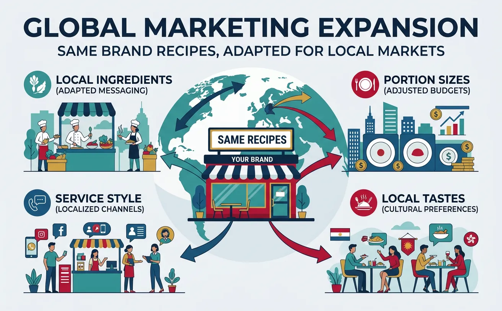
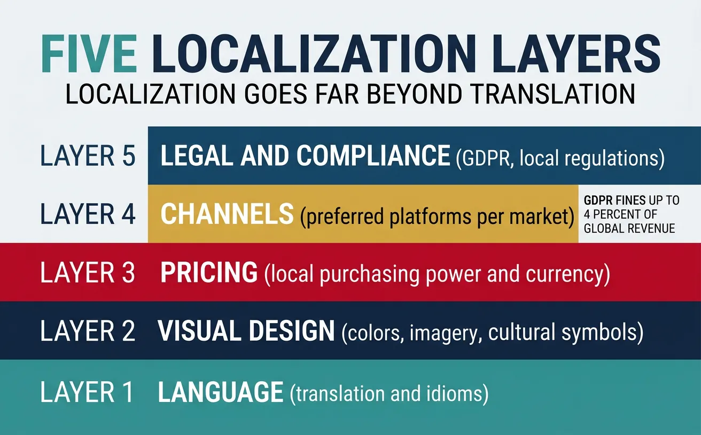
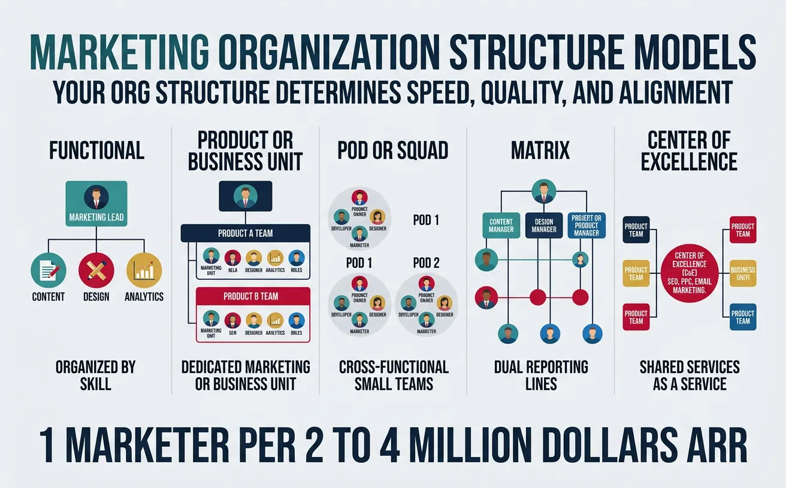
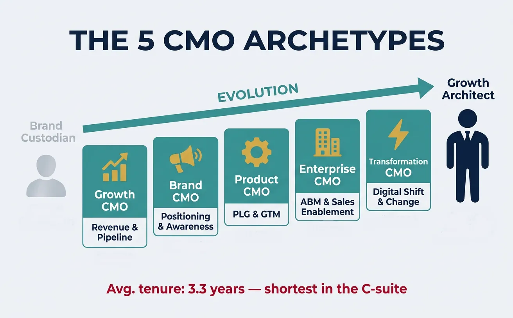
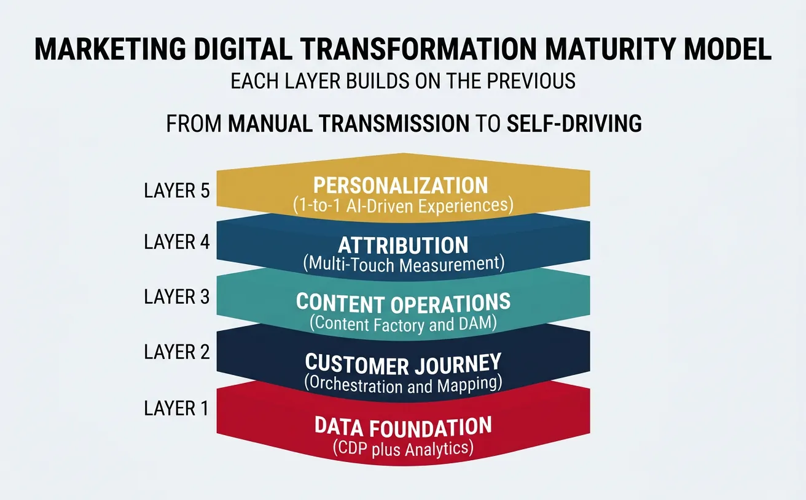

We use cookies to enhance your browsing experience, serve personalized content, and analyze our traffic.
By clicking "Accept All", you consent to our use of cookies. See our
Privacy Policy
for more information.
Part 20 of 21: Building on offline marketing from Part 19, this article explores scaling marketing organizations and strategic leadership for global growth.
Think of global marketing expansion like opening a restaurant chain in different cities. Your recipes (brand) stay the same, but you adapt ingredients (messaging), portion sizes (budgets), and service style (channels) for local tastes. The companies that fail abroad are the ones who think their hometown menu works everywhere.

Global marketing expansion is like opening restaurants in new cities — same brand recipes, adapted for local tastes and ingredients
The Scale Imperative: Companies with international marketing operations grow 1.5× faster than domestic-only counterparts (BCG). Yet 72% of consumers prefer buying in their native language, and 56% say the ability to obtain information in their own language is more important than price (CSA Research). Global isn't optional — it's how you unlock the other 96% of the world's consumers who live outside the US.
Global Strategy Model
Approach
Best For
Example
Marketing Implication
Standardization
Same product/message everywhere
Tech, luxury brands
Apple: Same iPhone ads globally
Centralized creative, translated not adapted
Adaptation
Tailored product/message per market
Food, cultural products
McDonald's: Local menus per country
Local marketing teams with creative freedom
Glocalization
Global brand + local execution
Consumer goods, SaaS
Coca-Cola: Global brand, local campaigns
Global brand guidelines, local campaign autonomy
Transnational
Integrated global-local network
Enterprise, B2B
P&G: Matrix of global/regional/local
Center of excellence + regional hubs + local teams
Localization Strategy
Localization is far more than translation. It's adapting your entire marketing experience — visual design, messaging tone, payment options, support hours, legal compliance — for each market:

Effective localization goes far beyond translation — five distinct layers must be adapted for each target market
Localization Layer
What to Adapt
Common Mistakes
Impact of Getting Wrong
Language
Copy, UX, support, legal
Machine translation without review
Brand embarrassment (HSBC's $10M rebrand after "Do Nothing" mistranslation)
Visual Design
Colors, imagery, layout direction (RTL)
Red means luck in China, danger in US
Cultural insensitivity + lost conversions
Pricing
Local currency, PPP-adjusted pricing
Charging US prices in emerging markets
0% market penetration (too expensive locally)
Channels
Platform preferences (WeChat vs. WhatsApp)
Running Facebook ads in markets where it's banned or irrelevant
Wasted ad spend, zero reach
Legal/Compliance
GDPR, data residency, advertising laws
Ignoring local regulations
Fines (GDPR: up to 4% of global revenue)
Market Entry Strategy
Choosing which markets to enter and how is one of the highest-leverage decisions a marketing leader makes:
Entry Mode
Speed
Cost
Control
Risk
Best For
Direct Export
Fast
Low
High
Medium
SaaS, digital products
Local Partner
Medium
Medium
Shared
Medium
Regulated markets, complex B2B
Joint Venture
Slow
High
Shared
High
China, India (local knowledge essential)
Acquisition
Fast
Very High
High
Very High
Established markets, talent acquisition
Greenfield Office
Very Slow
Very High
Full
High
Strategic long-term markets
The 3-Market Rule: Never expand to more than 3 new markets simultaneously. Each new market requires dedicated localization, compliance, tooling, and team attention. Companies that try to "launch in 20 countries at once" typically fail in 18 of them. Pick 1-3 strategically, win there, learn, then expand.
Case Study: Spotify's Global Expansion ($78B Market Cap)
Global Strategy183 Markets
The Strategy: Spotify's expansion to 183 markets is a masterclass in scalable localization:
Market selection: Prioritized by music market size + mobile penetration + competitive landscape
Localization depth: Local playlists curated by regional editors, local artist promotion, culturally relevant features (Bollywood mode in India, K-pop features in Korea)
Pricing adaptation: Premium pricing ranges from $0.99/month (India) to $15.99/month (Switzerland) based on purchasing power parity
Platform-specific marketing: WhatsApp sharing in Brazil, KakaoTalk integration in Korea, Jio partnership in India
Results: 600M+ users globally, 30%+ of revenue from outside Europe/US, fastest-growing markets contributing disproportionate growth
Key Lesson: Spotify proved that a global product with deep local adaptation beats either a purely global or purely local approach. Their secret: centralized technology platform + decentralized content and marketing teams.
Marketing Organization
Team Structures
Your marketing org structure determines speed, quality, and alignment. Think of it like building a sports team — you need the right positions, clear roles, and a formation that matches your playing style:

Your marketing org structure determines speed, quality, and alignment — choose the model that matches your company’s stage and strategy
Org Model
Structure
Speed
Best For
Common Problem
Functional
Teams by specialty (SEO, Content, Paid, Email)
Medium
Companies <100 employees, early-stage
Siloed teams, slow cross-functional projects
Product/BU
Full-stack marketers per product line
Fast
Multi-product companies
Duplicated expertise, inconsistent brand
Pod/Squad
Cross-functional pods (marketer + designer + dev)
Very Fast
Growth-stage, experiment-heavy
Hard to maintain quality standards
Matrix
Functional + BU overlay
Slow
Enterprise, 200+ person marketing orgs
Double reporting, political complexity
Center of Excellence
Central strategy + embedded specialists
Medium
Scaling organizations (50-200 people)
Tension between central control and local speed
The Marketing Team Sizing Formula: As a rule of thumb, high-growth SaaS companies allocate 1 marketer per $2-4M ARR. So a $20M ARR company typically has 5-10 marketers. A $100M ARR company: 25-50 marketers. Within that team, the typical breakdown is: 40% demand gen/growth, 25% content/brand, 20% marketing ops/analytics, 15% product marketing.
Hiring & Talent
The first 5 marketing hires define a company's marketing DNA. Get them wrong and you'll rebuild the entire team within 18 months:
Hire Order
Role
Why This Sequence
Key Skill to Test
1st Hire
Growth Generalist (full-stack marketer)
Can do everything passably before you specialize
Give them a budget and goal — how do they think?
2nd Hire
Content/Brand Writer
Content is the foundation for SEO, social, email, ads
Writing test with real brief, 48-hour turnaround
3rd Hire
Demand Gen / Paid
Accelerate growth beyond organic with paid channels
Past campaign breakdown: budget, CPA, ROAS
4th Hire
Marketing Ops / Analytics
Measure everything, build the data infrastructure
Build a dashboard from raw data in 1 hour
5th Hire
Product Marketer
Bridge between product and market, drive positioning
Position a product they've never seen in 30 minutes
T-Shaped Marketers Win: Hire people who are deep in one discipline (the vertical bar of the T) but capable across many (the horizontal bar). A "T-shaped" content marketer who also understands SEO and analytics is 3× more valuable than a specialist who can only write blog posts but can't analyze performance or optimize for search.
Marketing Operations
Marketing Operations (MOps) is the hidden engine behind every high-performing marketing team. Think of MOps as the pit crew in Formula 1 — the driver (marketing) gets the glory, but the pit crew determines whether they win:
MOps Function
What It Covers
Key Metrics
Tools
Tech Stack Management
MarTech selection, integration, maintenance
Tool utilization rate, integration health
HubSpot, Marketo, Salesforce
Data & Analytics
Attribution, reporting, data quality
Attribution accuracy, data completeness %
Looker, Tableau, GA4
Campaign Ops
Workflow automation, QA, deployment
Campaign velocity, error rate, time-to-launch
Asana, Monday, Workfront
Lead Management
Scoring, routing, SLA compliance
Lead-to-MQL %, MQL-to-SQL %, SLA adherence
LeanData, Clearbit
Budget & Performance
Spend tracking, ROI reporting, forecasting
CAC, ROAS, budget utilization
Allocadia, Planful
Case Study: HubSpot's Marketing Org ($30B+ Market Cap)
Marketing Org DesignInbound Pioneer
The Strategy: HubSpot scaled from 10 to 200+ marketers while maintaining startup speed through deliberate organizational design:
Pod structure: Cross-functional "pods" of marketers, designers, and developers aligned to specific audience segments, enabling 50+ experiments/month
Content as product: Treated marketing content (blogs, tools, Academy) as products with dedicated product managers — HubSpot Academy alone has 500K+ certified professionals
Marketing ops investment: 15% of marketing headcount in MOps, maintaining 250+ integrations across their tech stack
Hiring philosophy: "Hire for slope, not intercept" — prioritized learning velocity over current skills, leading to internal promotion rate of 35%+
Results: Grew from $28M to $2B+ ARR with marketing driving 60%+ of total pipeline, all while keeping CAC payback under 12 months
Key Lesson: HubSpot's success came from treating their marketing team like a product org — pods for speed, ops for quality, and content as a standalone product line that generates its own value.
Executive Leadership
CMO Function
The Chief Marketing Officer role has evolved from "brand custodian" to "growth architect." The modern CMO sits at the intersection of creativity, data, technology, and revenue — making it arguably the most complex C-suite role:

The modern CMO role has evolved from brand custodian to growth architect — five distinct archetypes match different company needs
CMO Archetype
Primary Focus
Skills Required
Best Fit Company Stage
Growth CMO
Revenue, pipeline, CAC optimization
Analytics, demand gen, sales alignment
Series B-D, scaling phase
Brand CMO
Market positioning, awareness, reputation
Storytelling, creative direction, PR
Consumer brands, pre-IPO
Product CMO
PLG, product positioning, GTM
Product sense, developer marketing, technical
Product-led companies
Enterprise CMO
ABM, sales enablement, field marketing
Executive selling, channel strategy, global ops
Enterprise B2B, $100M+ revenue
Transformation CMO
Digital shift, culture change, modernization
Change management, tech adoption, org design
Traditional companies going digital
The CMO Tenure Problem: Average CMO tenure is just 3.3 years — shortest of any C-suite role (Spencer Stuart). The #1 reason: misalignment between CEO expectations and CMO capabilities. The fix: explicit agreement on what type of CMO the company needs before hiring, with 90-day milestones that both sides sign off on.
Board Communication
Most marketing leaders fail at board-level communication because they speak in marketing language (impressions, engagement, MQLs) instead of board language (revenue, market share, competitive position):
What You Want to Say
What the Board Wants to Hear
Metric to Present
"We increased website traffic 40%"
"Pipeline from organic grew $2.3M QoQ"
Organic pipeline contribution
"Our social engagement is up 65%"
"Brand awareness in target accounts rose 12 points"
Aided awareness in ICP
"We launched 3 new campaigns"
"New campaigns contributed $1.8M in first-touch pipeline"
Campaign-sourced revenue
"Content published: 45 blog posts"
"Content drives 35% of qualified leads at $42 CAC"
Content-attributed CAC
"Email open rates improved to 28%"
"Email nurture accelerated deal velocity by 18 days"
Average days in pipeline
The "3-Slide" Board Rule: Your marketing board update should fit in 3 slides: (1) Pipeline & Revenue Impact — what marketing contributed to the business this quarter, (2) Efficiency & Unit Economics — CAC trend, payback period, channel ROI, (3) Strategic Bets & Market Position — 1-2 strategic initiatives + competitive landscape. If you need more than 3 slides, you haven't thought hard enough about what matters.
Cross-Functional Leadership
Marketing doesn't operate in a vacuum. The best CMOs are cross-functional bridge builders who align marketing with every major function:
Partnership
Alignment Mechanism
Key Shared Metrics
Common Friction Point
Resolution
Sales ↔ Marketing
Weekly pipeline reviews, shared SLAs
MQL→SQL %, pipeline velocity, win rate
Lead quality disagreements
Jointly defined lead scoring + feedback loops
Product ↔ Marketing
Monthly roadmap syncs, beta programs
Feature adoption, NPS, time-to-first-value
Launch timing + messaging gaps
PMM embedded in product team
Finance ↔ Marketing
Quarterly business reviews, budget tracking
CAC, LTV, payback period, ROAS
Marketing as "cost center" perception
Attribution model agreed with CFO
CS ↔ Marketing
Expansion campaigns, case study pipeline
NRR, expansion revenue, advocacy rate
Customer communication conflicts
Shared calendar + customer journey mapping
Case Study: Salesforce's Marketing-Sales Alignment ($250B+ Market Cap)
Cross-FunctionalEnterprise Leadership
The Strategy: Salesforce built the gold standard for marketing-sales alignment at scale:
"V2MOM" framework: Every team — including marketing and sales — creates aligned Vision, Values, Methods, Obstacles, Measures documents that cascade from CEO
Shared revenue targets: Marketing leadership carries a revenue number, not just pipeline — eliminating the "we generated leads, sales didn't close them" finger-pointing
Customer 360 approach: Marketing, sales, service, and commerce teams share a unified customer view — enabling personalized engagement across the entire lifecycle
Dreamforce as alignment engine: The company's 170K+ attendee event aligns marketing, sales, product, and CS teams around a single narrative each year
Results: $34B+ revenue, 90%+ revenue from existing customers, marketing drives both new logo acquisition AND expansion revenue
Key Lesson: Alignment isn't about org charts or processes — it's about shared metrics, shared language, and shared accountability. When marketing and sales both carry revenue targets, the fighting stops and collaboration starts.
Marketing Transformation
Digital Transformation
Marketing digital transformation isn't about buying new tools — it's about rewiring how marketing creates, delivers, and measures value. Think of it as upgrading from manual transmission to self-driving: the destination is the same, but every process changes:

Marketing digital transformation progresses through five layers, each building on the previous — from data foundation to AI-powered personalization
Transformation Layer
From (Legacy)
To (Modern)
Key Technology
Timeline
Data Foundation
Spreadsheets + gut feel
CDP + real-time analytics
Segment, Snowflake, dbt
3-6 months
Customer Journey
Campaign-centric blasts
Journey-based orchestration
HubSpot, Braze, Iterable
6-12 months
Content Operations
Ad hoc content creation
Systematic content factory
ContentStack, Notion, AI tools
3-6 months
Attribution
Last-touch or first-touch
Multi-touch + incrementality
GA4, MMM, geo-lift studies
6-12 months
Personalization
Segment-based (5 segments)
1:1 AI-driven (millions of segments)
Dynamic Yield, Optimizely
12-18 months
Change Management
The hardest part of transformation is people, not technology. Research shows 70% of transformation initiatives fail — and it's almost never because of the tools:
Recruit 2-3 influential early adopters per team, secure exec sponsor
Key influencers actively championing change
3. Quick Wins
Demonstrate early value
Pick one pilot process, automate it, showcase time/cost savings
Measurable improvement within 30 days
4. Scaling
Expand adoption
Training programs, documentation, dedicated support channel
50%+ team using new tools/processes daily
5. Anchoring
Make change permanent
Update KPIs, hiring criteria, onboarding to reflect new ways
New hire expects modern approach as default
The 20-60-20 Rule of Change: In any organization, 20% will embrace change eagerly (your champions), 60% will wait and watch (your persuadable middle), and 20% will resist no matter what (your blockers). Focus 80% of your change management energy on the persuadable 60%. Win them with quick wins and peer proof, not mandates.
Future of Marketing
The marketing landscape is shifting faster than ever. Here are the forces reshaping marketing over the next 3-5 years:
Trend
Impact on Marketing
Prepare Now By
Timeline
AI-Generated Content
Content creation cost drops 90%; quality bar rises dramatically
Building AI workflows, training teams on prompt engineering
Happening now
Cookie Deprecation
Third-party targeting dies; first-party data wins
Building owned audiences, implementing server-side tracking
2024-2026
AI-Powered Search
Zero-click answers reduce organic traffic 30-50%
Optimizing for AI citations, building direct audience channels
2024-2027
Hyper-Personalization
1:1 experiences at scale become table stakes
Implementing CDP, building real-time decisioning
2025-2028
Community-Led Growth
Communities replace ad-driven acquisition
Investing in community platforms, hiring community managers
Case Study: Adobe's Marketing Transformation ($200B+ Market Cap)
Digital TransformationCloud Pivot
The Strategy: Adobe's transformation from boxed software to cloud platform is the blueprint for marketing-led business transformation:
Marketing-led pivot: Marketing championed the narrative shift from "software company" to "experience company" — reframing the entire brand around Experience Cloud
Self-disruption marketing: Actively marketed against their own legacy products, accelerating Creative Cloud adoption from 0 to 30M+ subscribers
Content ecosystem: Built a massive content engine (Adobe Blog, CMO.com, Summit) that positioned Adobe as the thought leader in digital experience — generating 40% of enterprise pipeline
Data-driven transformation: Invested $3B+ in Marketo, Magento, and Frame.io acquisitions, then used their own marketing tech to prove the value to customers
Change management: Retrained 25,000+ employees on cloud-first thinking, with marketing leading the internal communications and culture shift
Results: Revenue grew from $4B (2013) to $19B+ (2024), with 93% recurring revenue — one of the most successful business model transitions in tech history
Key Lesson: Adobe proved that marketing isn't just a function that supports transformation — it can lead transformation. Their marketing team didn't just communicate the change; they created the narrative, built the proof points, and drove the cultural shift that made the entire company successful.
Tools & Practice
Scaling & Leadership Canvas
Plan your marketing scaling and leadership strategy. Download as Word, Excel, PDF, or PowerPoint.
Draft auto-saved
All data stays in your browser. Nothing is sent to or stored on any server.
Practice Exercises
Exercise 1: Design Your Marketing Org
Create a marketing org structure for a $50M ARR B2B SaaS company:
Choose your org model (functional, pod, matrix, or center of excellence)
Design the team structure: define 12-15 roles with clear reporting lines